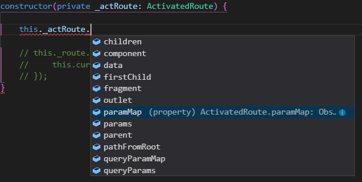
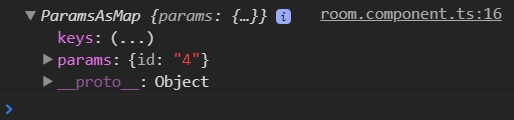
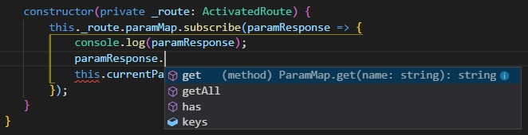
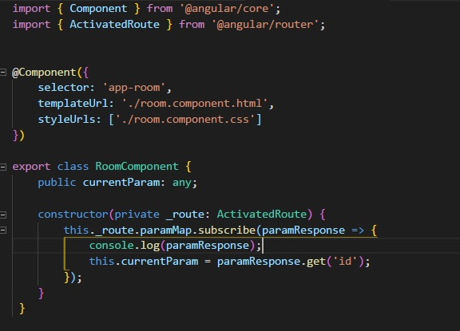
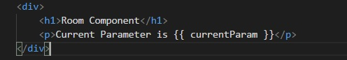
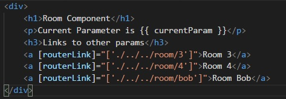

We were able to utilize parameters in our routes last lesson but now we need to do something with it. Let's start by displaying the parameter on the screen.
You may recall that by importing Angular modules, it gives us access to a whole bunch of cool tools (that rhymed!) that we can use in our app. And one of those modules that we imported earlier was RouterModule. We are going to use one of those tools right now: ActivatedRoute
ActivatedRoute is a service that is brought in through RouterModule. Now services are a whole other topic that we will absolutely get to but for right now, focus on the following things
There's more to it than that, of course, but for now, focus on that.
So we want this ActivatedRoute service, so first we have to import it. Let's go into our room.component.ts and add the following line up top:
import { ActivatedRoute } from '@angular/router';
Sweet, we imported it, now we need to inject it. Remember that all services need to be injected inside the parentheses of a constructor. We assign it both a private/public designation (with services, you are almost always going to make it private), and a variable name. We give it a variable name so we have something to refer to it by later. Finally, we designate the service we are injecting by assigning the variable to be that type.
That was a juicy sentence. Let's see it in action:
constructor (private _actRoute: ActivatedRoute) {}
There we go. We made our service private, gave it the variable name _actRoute, and gave it a type ActivatedRoute so it knows what service we're bringing in.
Whew! We got our service, now lets do something with it inside the curly braces of our constructor. Buckle up.
So we've now designated our service in the variable _actRoute. Go inside the curlybraces {} of our constructor and start to type in the variable:
Cool, we can see a whole bunch of methods that have to do with our current route. The one we are looking for is paramMap. But we cannot simply get the value, because paramMap is an observable.
An observable is a piece of rxjs. An observable is subcribed to by an observer. Then when the observable emits information, the observer can do something with it.
Think of an observable as an event listener for variables. In JS we add an eventListener, and we can tell JS to execute certain code when that event is triggered. Observables work in a similar fashion. We subscribe to it, and we declare a function inside that subscription which runs whenever the observable emits information.
You may be thinking as a follow up to that, "When does an observable emit that information? When will my code run?". The answer varies depending on the observable, but most will run the code at least once when you subscribe to it. For paramMap, it also triggers any time there is a change in the data, which in our case would be the parameter. We will talk more about when observable emit later on when we starting getting data from a database.
Enough of me talking, lets look at see what that data looks like. Your constructor should look like so.
constructor (private _actRoute: ActivatedRoute) {
this._actRoute.paramMap.subscribe( paramResponse => {
console.log(paramResponse);
});
}
Get familiar with this syntax, because you'll see it quite a bit. We call the paramMap method of the service we injected earlier. Since its an observable, we have to subscribe to it.
We know from eralier that an observable will emit information, so we passed that data into a function using phat arrow notation. We gave the data a variable name paramResponse and now we want to console.log it when the observable send us information.
Let's check it out. Navigate to localhost:4200/room/1 in our app by typing it in the navbar, and check out your console. You should see the following:
Sweet! We can see that the response is giving us the paramater and its stored as the property "id". It's called id because that's the name we gave that our paramter in our route array.
So we can see it, but how do we get it? Believe it or not, the response you get has its own methods too (brain explodes). Don't expect to know every method for every type of observable that you deal with, but if you use your intellisense on the paramResponse, you'll see a list:
Awesome, we have both a get and getAll. You can infer from this that it is possible to have multiple parameters in a route, since theres a method to get all of them. In our example, though, we only need one. so let's call the get method.
Now we just need to tell it which paramter to get. Remember what name we gave our parameter? That's right, we called it "id". We can see this both in our route array and in the screen shot.
Finally, we want to put that param result in a variable so we can display it later. Here's the final result of our component:
You can see up top I created a variable named currentParam and I assigned it to contain the value of our get method down below.
Almost there! Now we just want this displayed in our html so we can see the result of our work. So inside the html of your root component, you'll want something like this:
Save and lets go back to localhost:4200/room/1. You should be able to see your paramter in the html! Try entering different values instead of 1 and see what happens.
That's all cool, but because we're typing it in the nav bar, we're reloading the app each time. Lets throw some links in our room component html like so:
Let's examine this for a bit and note a few things:
Now navigate back to your room component and click on those links. Notice how the whole page is NOT reloading when you click on the link. Amazing! Notice how that variable is changing each time you click on a link. That's because the paramMap observable is triggering an emit any time there is a change in parameters. And since inside our subscription we are reassigning our variable, the variable name changes with the parameters. Mind. Blown.
Now we need to create a list of rooms and add them to our nav bar. That will be another two-parter. Take your time to wrap your head around what we just discussed. It's a lot.
rxjs is short for the ReactiveX JavaScript library. There is a LOT of stuff in rxjs and we will only be covering a small fraction of it. If you want to fill your brain with even more information, the link to the rxjs page is here. Be warned, rxjs is a deep topic. You may want to save this for later.